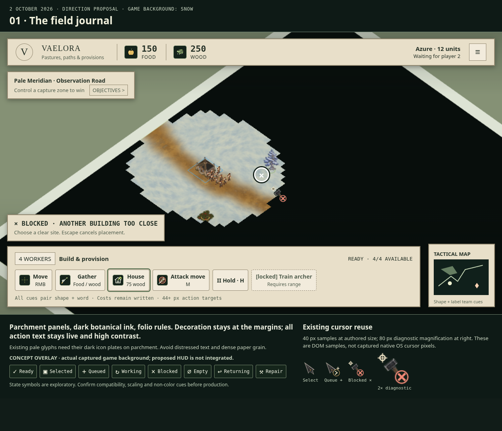
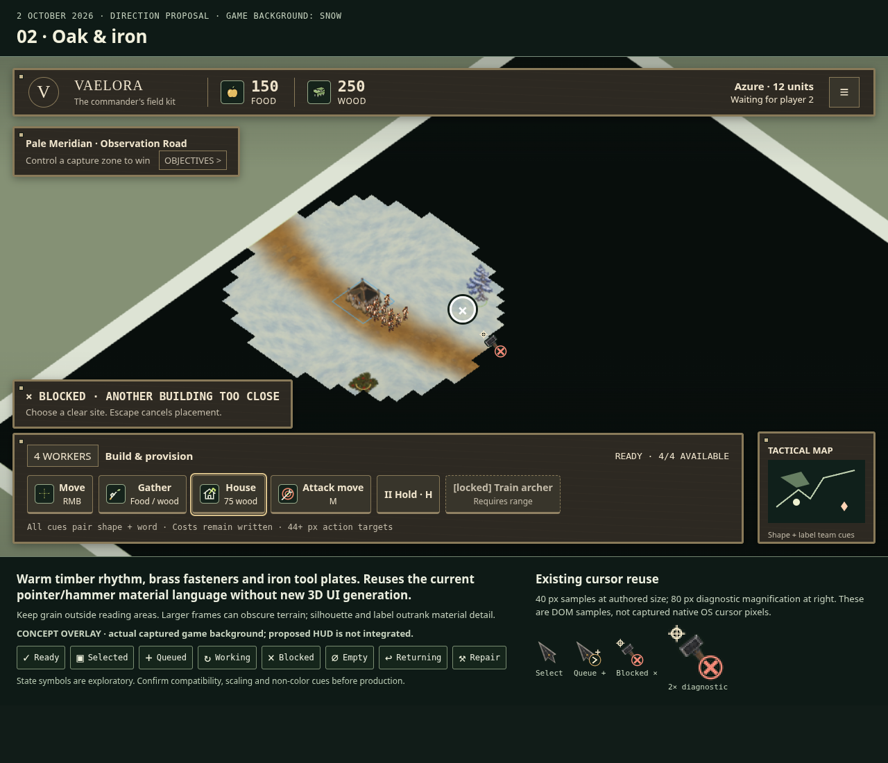
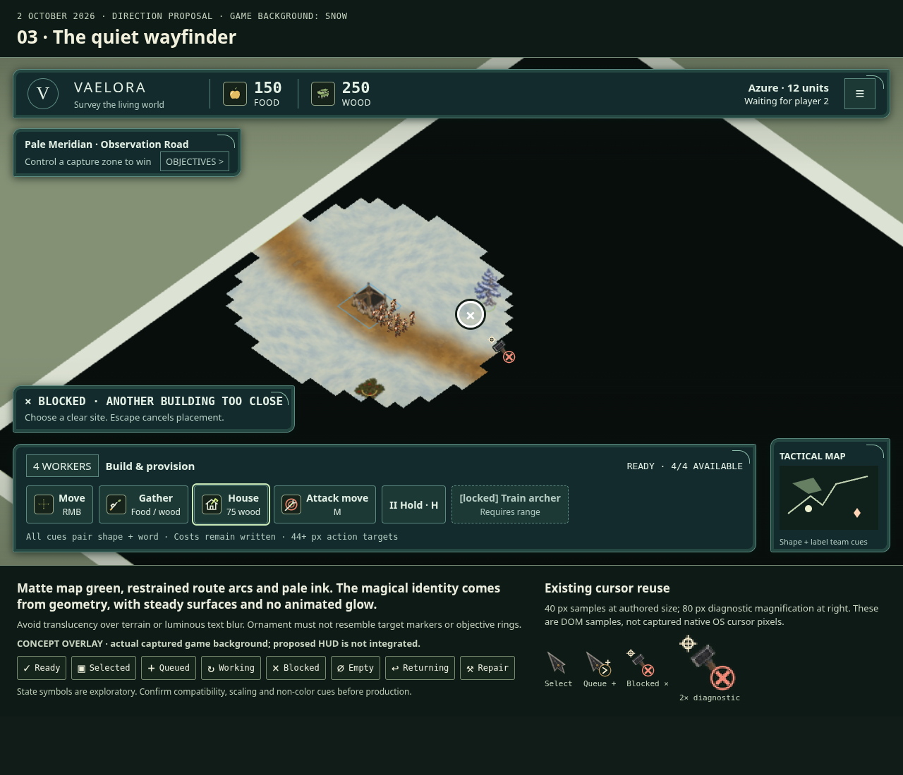

Vaelora · three HUD directions for review
Code-authored proposals using current icons/cursors on actual captured snow terrain. The proposed HUD is not integrated.

01 · Field journalParchment and botanical ink. Pale icons keep dark plates.
Tradeoff: light panels carry more visual weight.

02 · Oak and ironTimber, brass and dark tool plates match existing cursors.
Tradeoff: thick frames can obscure terrain.

03 · Quiet wayfinderMatte map green, pale ink, restrained magical route arcs.
Tradeoff: ornament must stay distinct from target markers.
Presentation thumbnails. Use the full-size PNGs and native-size asset board to assess text and badges. Direction choice remains open.